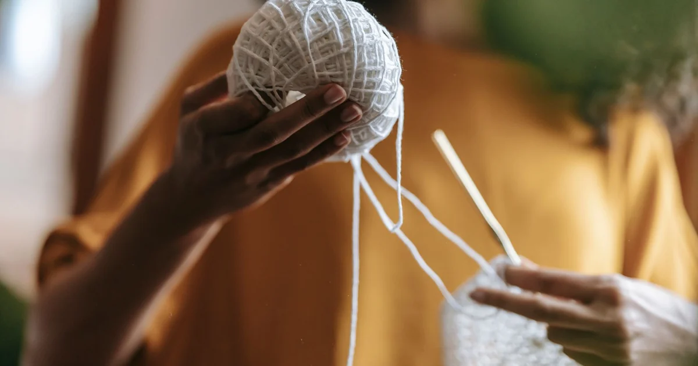
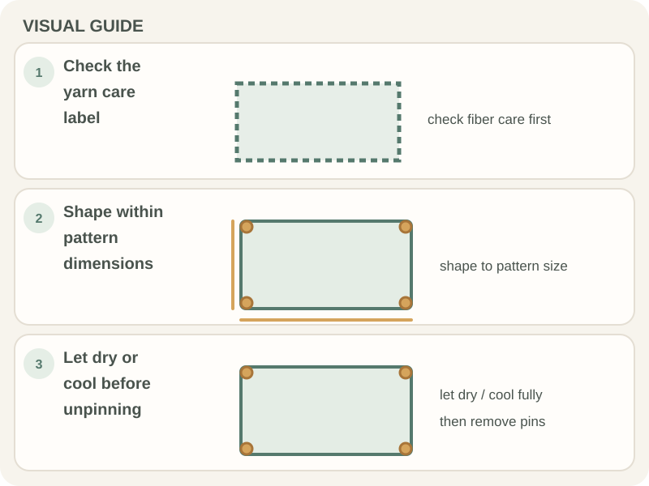

Patterns & Troubleshooting · Beginner guide
How to Block a Crochet Project
Blocking reshapes a finished crochet piece; choose a method only if it suits the fiber and care label.

Wet, steam, and spray blocking are different methods. Heat and moisture can damage some yarns, so check the fiber instructions before applying either.
Before you begin
Read the yarn label and pattern care notes, then test the method on a swatch if you are unsure. Use a clean, flat, pinnable surface only when the fiber can be shaped that way.
Step-by-step instructions
- Choose wet, steam, or spray blocking only when suitable for the yarn.
- Shape the damp or warmed fabric gently to the pattern measurements; do not stretch it beyond its structure.
- Pin only if the fiber and project tolerate it, keeping pins away from delicate yarn.
- Let the piece dry or cool completely before removing pins and checking the shape.

How to check your work
The fabric should hold the intended shape without shiny, scorched, stretched, or felted areas. If the swatch changes unexpectedly, stop and do not use that method on the full item.
Common beginner problems
- The fabric will not hold its shape: Blocking cannot replace a different stitch count or construction; check the pattern and fiber.
- The yarn becomes shiny or limp: Stop applying heat or moisture; the method may not suit the fiber.
- The edges stretch too far: Remove pins and reshape gently within the pattern measurements.
Test before blocking
Fiber behavior varies. A small swatch lets you see whether moisture or heat changes the yarn before you treat a finished piece. Follow the yarn label and pattern care directions, and avoid direct heat unless the care guidance allows it.
Frequently asked questions
Does every crochet project need blocking?
No. It can help some pieces lie flat or meet measurements, but follow the pattern and fiber care.
Can I steam any yarn?
No. Check the fiber label and test a swatch; heat can damage some fibers.
Should I pin the piece larger?
Only shape it to the intended measurements and within the fabric’s natural stretch.